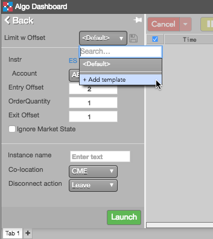
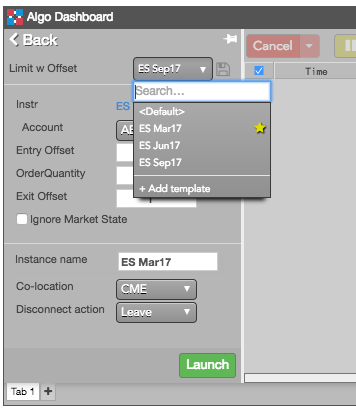
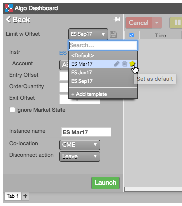

Create an algo template
To create an algo template:
-
Select an algo from My Algos in the Algo Dashboard.
-
Select Add template from the Templates drop-down menu.

-
In the Add template dialog, enter a Name for the template, and click Save.
The template is added to the drop-down.
-
Update the desired algo parameter values, and click the  icon.
icon.
Using an algo template
To use a template for an algo:
-
Select an algo from My Algos in the Algo Dashboard.
-
From the Templates drop-down menu, select the template to update the current values with those in the template.

-
Make any desired changes to the algo parameters.
-
If desired, specify a custom Instance name for the algo instance.
-
Click Launch to launch the algo template.
Modifying an algo template
To modify an algo template:
-
Click Pick Algo, and select the desired algo from the list of deployed algos.
-
From the Template drop-down, select the template you want to modify.
-
Update the desired algo parameter values, and click the icon.
Setting a default algo template
You can select a default template to use whenever you select an algo. After selecting a default template, the values in that template are pre-populated when you select the algo.
To set a default template for an algo:
-
Select an algo from My Algos in the Algo Dashboard.
-
Click the Templates drop-down menu.
-
Click the  icon for the template you want to make the default.
icon for the template you want to make the default.

Deleting an algo template
To delete an algo template:
-
Select an algo from My Algos in the Algo Dashboard.
-
Click the Templates drop-down menu.
-
Click the icon for the template you want to delete.